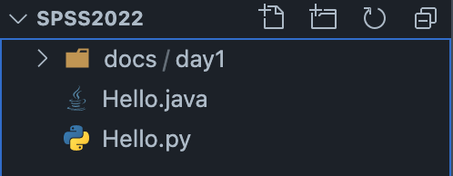
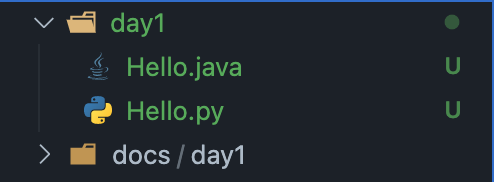
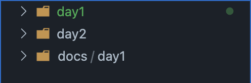
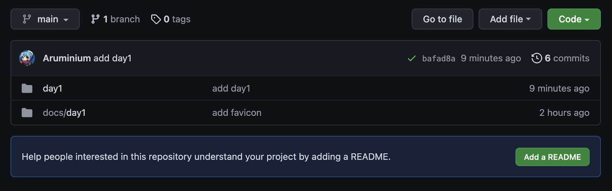
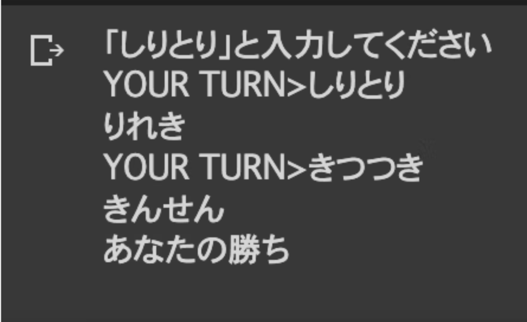

今回は「Python」を扱う。
基本文法を学び、しりとりプログラムを作成する。
基本文法を学ぶ度に確認問題を用意してあるので、挑戦していただきたい。
「基本文法」ではVSCode上で取り組み、最後にpushしてもらう。
Pythonプログラミング入門を参考にします。
「しりとりプログラム」はGoogle Colab上で作成する。
コーディングスタイルはPEP8(非公式日本語訳)に準拠します。
フォルダ「SPSS2022」の現在の構成は以下の様になっている。

※docs/は無視してください。(私が資料をおいているフォルダです。)

これも個人差があるが、ファイル名の色が緑色に変化しているのは、前回
$ git initというコマンドを入力し、ファイルやフォルダをgitで管理するようにしたからだ。
実は、こうした変更を管理しているフォルダが存在している。それは「.git」である。
フォルダの前に「.」ピリオドがつくフォルダを「隠しフォルダ」と言い、普段私たちは見ることができません。
しかしmacは「ls」、windowsは「dir」コマンドを使うことによって、確認することができる。
$ dir$ ls -a
./ ../ .git/ day1/ docs/
$ ls .git/
COMMIT_EDITMSG config info/
FETCH_HEAD description logs/
HEAD hooks/ objects/
ORIG_HEAD index refs/「-a」はコマンドオプションと呼ばれる。今回の場合は、隠れファイル等含めた全てを確認する。というコマンドになる。

今回から、毎回「day~」というフォルダを作成し、その中にファイルを保存する様にする。
「git status」というコマンドで確認する。簡単にいうと変更点を確認できる。
$ git status
On branch main
Your branch is up to date with 'origin/main'.
Changes not staged for commit:
(use "git add/rm <file>..." to update what will be committed)
(use "git restore <file>..." to discard changes in working directory)
deleted: Hello.java
deleted: Hello.py
Untracked files:
(use "git add <file>..." to include in what will be committed)
day1/
no changes added to commit (use "git add" and/or "git commit -a")
これをみるとHello.javaとHello.pyが削除されていること、新しく「day1」フォルダが作成されていることをgitが教えてくれている。
これらの情報をGitHub(リモートリポジトリ)に反映させる必要がある。
そこで使うのが「git add」、「git commit」、「git push」である。
「git add」で反映させるファイルやフォルダを指定する
$ git add Hello.java
$ git add Hello.py
$ git add day1/
or
$ git add -A「git add -A」ですべての untracked とmodifiedなファイルやフォルダを指定できる
再び「git status」で確認してみよう
$ git status
On branch main
Your branch is up to date with 'origin/main'.
Changes to be committed:
(use "git restore --staged <file>..." to unstage)
renamed: Hello.java -> day1/Hello.java
renamed: Hello.py -> day1/Hello.py指定できていそうですね。次に「git commit」でpushするファイルやフォルダを確定させます。その際にコミットメッセージというのを加えます。
$ git commit -m "add day1"
[main bafad8a] add day1
2 files changed, 0 insertions(+), 0 deletions(-)
rename Hello.java => day1/Hello.java (100%)
rename Hello.py => day1/Hello.py (100%)git commit -m "コミットメッセージ"で簡単にできます。 -m "コミットメッセージ"をつけないと、開かれたテキスト入力モード内でコミットメッセージを書くことになり、面倒になるので、必ずつけましょう
「git push」でリモートリポジトリに反映させる
$ git push
Enumerating objects: 4, done.
Counting objects: 100% (4/4), done.
Delta compression using up to 8 threads
Compressing objects: 100% (3/3), done.
Writing objects: 100% (3/3), 332 bytes | 332.00 KiB/s, done.
Total 3 (delta 0), reused 0 (delta 0), pack-reused 0
To https://github.com/Aruminium/SPSS2022.git
00d3017..bafad8a main -> main前回最初のpush時に「git push -u origin main」と入力したので、「main ブランチ」にいる時は「git push」で送れるようにしました。
この「ブランチ」は非常に重要になりますが、本勉強会では「mainブランチ」のまま進めるので、わからない方は気にしなくて大丈夫です。

自分のGitHubのSPSS2022にアクセスして反映されていることを確認しよう。
文字列はシングルクォート'...'、またはダブルクォート"..."で囲んで記述します。
word = "a"
print(word)
# aまた、組み込み関数strを用いた記述もある。
word = str(123)
print(word)
# 123文字列同士、連結することができる。
word1 = "山田"
word2 = "太郎"
name = word1 + word2
print(name)
# 山田太郎スライスと呼ばれる機能を利用して部分文字列を得ることができます。
また、essay[0]とすると、"私"が出力されることに注意する
essay = "私の名前は山田太郎と申します。職業は会社員です。"
print(essay[5:]) # 文字列の6番目(山)から文字列の最後まで出力
# 山田太郎と申します。職業は会社員です。
print(essay[-1]) # 文字列の一番後ろ(。)を出力
# 。
print(essay[0:4]) # 文字列の1〜5番目(私〜は)までを出力
# 私の名前
print(essay[5:12:2]) # 文字列の5番目から11番目まで2文字おきに取り出す
# 山太としreplaceという関数を用いると文字列の置き換えができる。
replace(置き換える対象, 新しい文字列)で扱うことができる。
essay = "私の名前は山田太郎と申します。職業は会社員です。"
new_essay = essay.replace("山田太郎", "田中")
print(new_essay)
# 私の名前は田中と申します。職業は会社員です。このような関数が他にもあるので、気になったら調べてみよう。
数値を定義するときはダブルクォート等は必要ない
age = 20
pi = 3.14
print(age)
# 20
print(pi)
# 3.14四則演算もできる
age = 20
pi = 3.14
print(age + 1)
# 21
print(age - 1)
# 19
print(pi * 2)
# 6.28
print(pi / 2)
# 1.57複数の変数を出力することもできる。
name = "Bana7"
age = 20
print(f"{name}は{age}歳です")
# Bana7は20歳です※f""はf-stringと呼ばれるフォーマット文の記法の1つである。
フォルダ「day2/」内に「work1.py」を作成する
文字列"stressed"の文字を逆に(末尾から先頭に向かって)並べた文字列を出力
str1 = "stressed"
ans1 = スライスを使う
print(ans1)「パタトクカシーー」という文字列の1,3,5,7文字目を取り出して連結した文字列を出力
str2 = "パタトクカシーー"
ans2 = スライスを使う
print(ans2)※コピペして、動作を確かめてください。
「パトカー」+「タクシー」の文字を先頭から交互に連結して文字列「パタトクカシーー」を出力
str3 = "パトカー"
str4 = "タクシー"
ans3 = "".join([i + j for i, j in zip(str3, str4)])
print(ans3)$ python3 work1.py
desserts
パトカー
パタトクカシーーif 条件式:
条件式が「真」の時実行される。
else:
条件式が「偽」の時実行される。Pythonはインデント(字下げ)によって、プログラムの範囲を制限する。
字下げはスペースキーやTabキーを押すことで出来る。また、字下げはPEP8ではスペース4つ分であると、指定している。
つまり、
if 条件式:
条件式が「真」の時実行される。
else:
条件式が「偽」の時実行される。こういったプログラムを書くとエラーが発生するので、気をつけよう
文字列の比較の例
in を使うと 変数「name」のなかに"山田"が含まれているかどうかを確認できる。
in は後述するリスト型にも使える。
name = "田中"
if "山田" in name:
print("山田です")
else:
print("山田ではないです")
# 山田ではないです
name = "田中と山田"
if "山田" in name:
print("山田です")
else:
print("山田ではないです")
# 山田です単純に変数「name」と"山田"を比較するときは「==」を使う。
name = "田中"
if "山田" == name:
print("山田です")
else:
print("山田ではないです")
# 山田ではないです
name = "田中と山田"
if "山田" == name:
print("山田です")
else:
print("山田ではないです")
# 山田ではないです数値の比較
age = 10
if age < 18: # ageが18未満なら
print("未成年です")
else:
print("成年です")
# 未成年です
if age <= 18: # ageが18以下なら
print("18歳以下です")
# print(18歳以下です)「<」や「<=」、「==」は比較演算子と呼ばれる。他にも「>」、「>=」、「!=」がある。
また、以下のような記法もある。
age = 10
if age < 18: # ageが18未満なら
print("未成年です")
else:
print("成年です")
# 未成年です
if not age < 18: # ageが18未満ではないなら
print("成年です")
else:
print("未成年です")
# 未成年ですまた条件式は複数書くことができる
if 条件式1 and 条件式2:
# 真
else:
# 偽
if 条件式1 or 条件式2:
# 真
else:
# 偽and は 条件式1と条件式2が「真」の時「真」を返す。
or は条件式1か条件式2がどちらかが「真」であれば「真」を返す
フォルダ「day2/」内に「work2.py」を作成する
変数「name」,「password」に任意の値を入力し、name が tanaka かつ、passwordが0000なら、"田中です"と出力し、それ以外なら"田中ではありません"と出力するプログラムを作成せよ。ただし入力は以下を参考にする。
name = input("nameを入力してください >")
password = input("passwordを入力してください >")
# ここに条件式を書くfor文
for 変数 in 文字列,リスト,辞書:
実行文if文と同様にインデントに気をつけてください
文字列から1文字ずつ取得することができる。
for c in "Apple":
print("Now character is "+c)
# Now character is A
# Now character is p
# Now character is p
# Now character is l
# Now character is e後述するリスト型での繰り返し処理
name_list = ["tanaka", "yamada", "taro"]
for name in name_list:
print(f"Hi! {name}")
# Hi! tanaka
# Hi! yamada
# Hi! taro後述する辞書型での繰り返し処理
member_list = {"tanaka": 20, "yamada": 10, "taro": 5}
# memberリストのkeyとvalueを取得する
for name, age in member_list.items():
print(f"{name}'s age is {age}.")
# tanaka's age is 20
# yamada's age is 10
# taro's age is 55回繰り返す -> range(5)
for i in range(5):
print(i)
print("Hello!")
# 0
# Hello!
# 1
# Hello!
# 2
# Hello!
# 3
# Hello!
# 4
# Hello!フォルダ「day2/」内に「work3.py」を作成する
田中くんは、"Hello"とあいさつを12回繰り返して言う。
しかし、3の倍数の回のときは、"Hello"ではなく"こんにちは"とあいさつすることになった。これを満たすプログラムを作成せよ。
3の倍数は、「数値%3==0」で表される。%はあまりを求める演算子
12%3(12を3で割った余り)は0なので、12%3==0は「真」である。
また、以下に続くプログラムを作成する
for i in range(1,13):
ここからプログラムを作成するHello!
Hello!
こんにちは
Hello!
Hello!
こんにちは
Hello!
Hello!
こんにちは
Hello!
Hello!
こんにちは変数名 = [要素1, 要素2, ...]で表されるものをリストと言う。
以下の変数は全てリストである。
numbers = [0, 10, 20, 30, 40, 50]
fruits = ["apple", "banana", "cherry"]
print(numbers)
# [0, 10, 20, 30, 40, 50]
print(fruits)
# ['apple', 'banana', 'cherry']これらの変数にも先述したスライスという機能があります。
numbers = [0, 10, 20, 30, 40, 50]
print(numbers[0])
# 0
print(numbers[0:3])
# [0, 10, 20]
print(numbers[0:5:2])
# [0, 20, 40]またnumbers[0]のような0番目の要素のことを、「インデックス」と呼びます。
リスト型は0番目から始まるので、0-indexのように呼ばれています。
文字列と異なり、リストは変更可能な変数です。numbers[2]の値を変えてみます。
numbers = [0, 10, 20, 30, 40, 50]
print(numbers[2])
# 20
numbers[2] = 100
print(numbers[2])
# 100リストに値を追加します。例えば、append()を使うとリストの末尾に指定した要素を付け加えることができます。
numbers = [0, 10, 20, 30, 40, 50]
print(numbers)
# [0, 10, 20, 30, 40, 50]
numbers.append(60)
numbers.append(100)
print(numbers)
# [0, 10, 20, 30, 40, 50, 60, 100]フォルダ「day2/」内に「work4.py」を作成する
変数「student_list」があります。
この変数には、生徒のリストが入ります。しかし、うっかりしていたため、出席番号を書いていませんでした。また、リストは「あいうえお順」で並んでいないことも判明しました。そこで、student_listから出席番号を計算し出力しよう。
出席番号は苗字によって「あいうえお順」で決まり、「あ」から番号が始まります。
また、リストは苗字がひらがなの状態で与えられます。
以下のプログラムの続きを作成する
numbers = ["いとう", "さとう", "すずき", "わたなべ", "たかはし", "たなか", "いとう", "いのうえ", "やまぐち", "さいとう"]
# あいうえお順で並び替えされる
numbers.sort()
# enumerate(リスト)でリストの要素と同時にindex番号を取得できる
# index番号は0番から始まる。
for index, name in enumerate(numbers):
# 処理関数は処理をまとめた再利用可能なコードです。
関数の定義は
def 関数名(引数):
処理の様にします。引数はなくても大丈夫です。実際に関数の定義をしてみましょう
def greeting():
print("Hello")関数を定義したら、呼ぶことができます
greeting()
# Hello関数で受け取った引数を元に処理を行い、その結果を返り値と言う形で返します。
返り値はreturnで定義します。返り値がない場合はNoneが返されます。
先のgreeting()は返り値がない。つまり返り値はNoneです。
def add(a, b):
return a+b関数addは返り値として変数aと変数bを足し合わせた値を返します。
Pythonは動的型付け言語なので、必ずしも変数aとbに整数が入るとは限らないと言うことに注意しましょう。
また、def add(a, b)のaとbは仮引数と呼ばれ、変数aとbはその関数の中でのみ参照することができます。この変数が扱える範囲のことを「スコープ」と呼びます。
つまり、
def add(a, b):
# このインデント内でのみaとbを使うことができる
return a+b
x = 4
y = 5
print(add(x, y))
# 9この場合では、xがaの役割をyがbの役割をします。
フォルダ「day2/」内に「work5.py」を作成する
2つの変数を引数にとる四則演算を行う関数を作成せよ。x = 1, y = 4とする。
以下に続くプログラムを作成する。
# 足し算
def add(a, b):
処理
# 引き算
# 掛け算
# 割り算
x = 1
y = 4
print(add(x, y))
print(sub(x, y))
print(mul(x, y))
print(div(x, y))動作
5
-3
4
0.25クラスとは、オブジェクトの種類を意味します。
新しいクラスを定義すると、そのクラスに属するオブジェクトを作ることができる様になります。
それらのオブジェクトの方は、その新しいクラスになります。
一般にクラス定義は以下の様な形をしています。
class クラス名:
def メソッド名(self, 引数, ...):
処理内容
def メソッド名(self, 引数, ...):
処理内容
...実際にクラスを作成します。
class HelloForEver:
def readline(self):
return "Hello.\n"以下の様にしてこのクラスのオブジェクトを作ることができます。
f = HelloForEver()このことを「インスタンス化」するといいます。
クラスの初期化
以下のクラスがあります。
class User:
def __init__(self, name, age):
self.name = name
self.age = age
def profile(self):
print(f"{self.name}さんは{age}歳です")この __init__(self, name, age)はインスタンス化される時に、勝手に実行されます。
またこのクラスをインスタンス化する際は、
user1 = User("tanaka", 30)
user2 = User("yamada", 37)
user3 = User("watanabe", 40)の様にインスタンス化します。__init__()に引数「name」と「age」を用意したので、インスタンス化する際に必要になりました。
この時、「self」はそのインスタンス化されたオブジェクトに自身を表します。
user1の関数profile()を呼んでみると、
user1.profile()
# tanakaさんは30歳ですと表示されることがわかります。
このときの「self.name」は「user1.name」と表されます。
同様に「self.age」は「user1.age」と表されます。
いずれの変数もインスタンス化する際に
user1 = User("tanaka", 30)と初期化されているので表示されています。
フォルダ「day2/」内に「work6.py」を作成する
確認課題#2-5で作成した関数をClass Calculatorに導入しよう。
class Calculator:
def __init__(self):
self.output = 0
def add(self, a, b):
return a+b
def sub(self, a, b):
return a-b
def mul(self, a, b):
return a*b
def div(self, a, b):
return a/b
def calculation(self):
a = int(input("1つ目の値を入力してください >"))
calc = input("+,-,*,/ >")
b = int(input("2つ目の値を入力してください >"))
# calcによって演算方法を変える
print(self.output)
calculator = Calculator()
calculator.calculation()
動作
1つ目の値を入力してください >2
+,-,*,/ >+
2つ目の値を入力してください >4
6なんとなく、Pythonについてわかってきただろうか。
次からは応用として、しりとりプログラムを作成する。
といった、AI作成の様なプロセスを体験できるので、やってみよう。(実際のAI作成はこのしりとりプログラムを作成するより大変です。)
今回はQiitaと呼ばれる、エンジニアの掲示板サイトに作り方を投稿したので、それをみながら作っていこう。(記事を参考に作成する練習をします。)
を参考にしていただきたい。

しりとりすることができたら、OK
1時間に収まるように、基本文法について列挙しました。(かなり詳細を省略しており、まだ基本文法はあります。)
Pythonというプログラミング言語が少しでも分かっていただけたら幸いです。
「print と書けば表示されるんだな。」そんな具合で大丈夫です。
詳しく基本文法について学びたい方は、末尾の「参考」から基本文法を学んでみてください。
当初は画像認識AIのプログラムを作成する予定でしたが、時間が足りないので割愛することになりました。
day3は「Java」をやります。おおよそ、今回と同じ構成になります。
解答例です。出力があっていたり、要件を満たしていれば正解です。
# 問1
str1 = "stressed"
ans1 = str1[::-1]
print(ans1)
# 問2
str2 = "パタトクカシーー"
ans2 = str2[::2]
print(ans2)
# 問3
str3 = "パトカー"
str4 = "タクシー"
ans3 = "".join([i + j for i, j in zip(str3, str4)])
print(ans3)name = input("nameを入力してください >")
password = input("passwordを入力してください >")
if name == "tanaka" and password == "0000":
print("田中です")
else:
print("田中ではありません")for i in range(1,13):
if i % 3 == 0:
print("こんにちは")
else:
print("Hello!")numbers = ["いとう", "さとう", "すずき", "わたなべ", "たかはし", "たなか", "いとう", "いのうえ", "やまぐち", "さいとう"]
# あいうえお順で並び替えされる
numbers.sort()
# enumerate(リスト)でリストの要素と同時にindex番号を取得できる
for index, name in enumerate(numbers):
print(f"{name}さんの出席番号は{index+1}です")def add(a, b):
return a+b
def sub(a, b):
return a-b
def mul(a, b):
return a*b
def div(a, b):
return a/b
a = 1
b = 4
print(add(a, b))
print(sub(a, b))
print(mul(a, b))
print(div(a, b))class Calculator:
def __init__(self):
self.output = 0
def add(self, a, b):
return a+b
def sub(self, a, b):
return a-b
def mul(self, a, b):
return a*b
def div(self, a, b):
return a/b
def calculation(self):
a = int(input("1つ目の値を入力してください >"))
calc = input("+,-,*,/ >")
b = int(input("2つ目の値を入力してください >"))
if calc == "+":
self.output = self.add(a, b)
if calc == "-":
self.output = self.sub(a, b)
if calc == "*":
self.output = self.mul(a, b)
if calc == "/":
self.output = self.div(a, b)
print(self.output)
calculator = Calculator()
calculator.calculation()
$ git add -A
$ git commit -m "day2 done"
$ git push